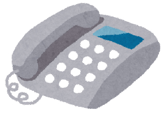
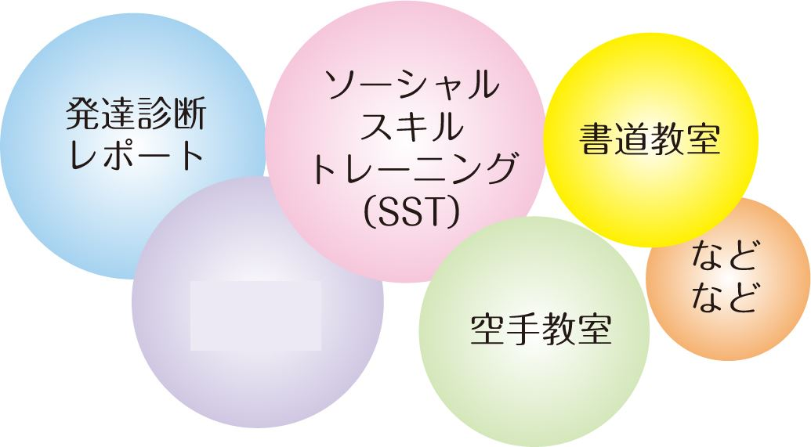
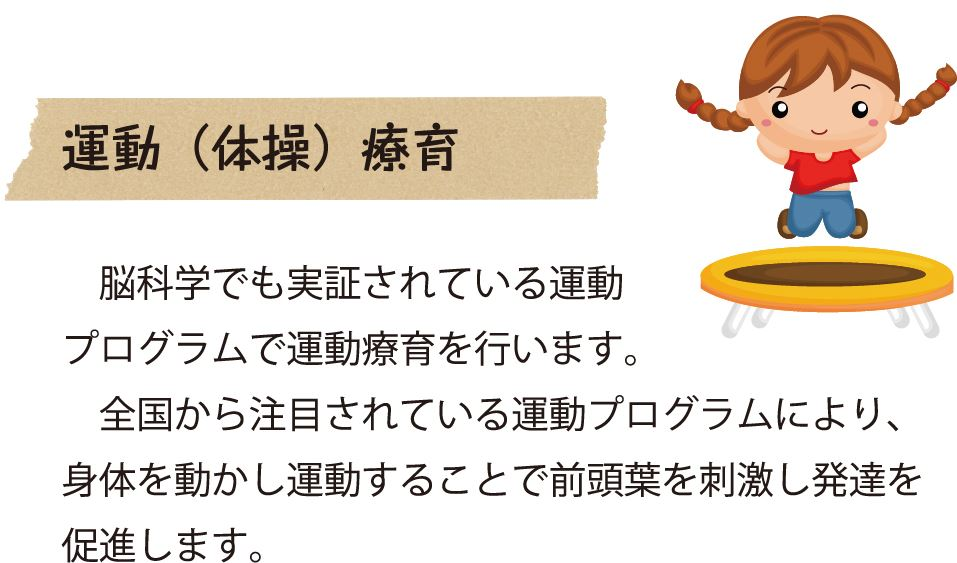
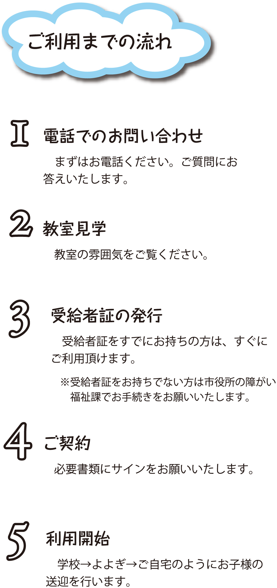
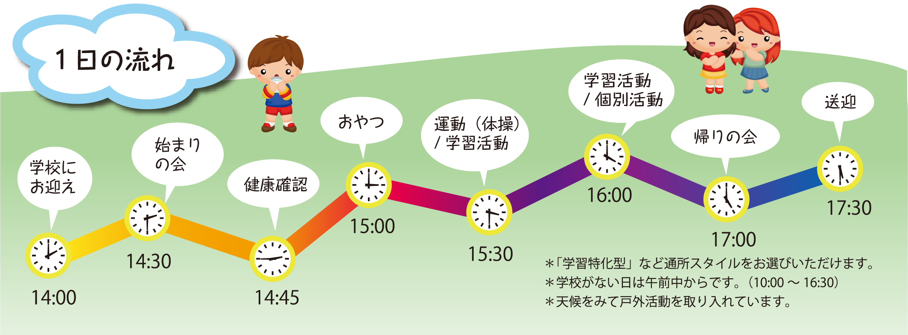

放課後等デイサービスよよぎ（代々木）
放課後等デイサービスとは、障害のある就学児童（小学生・中学生・高校生）が学校の授業終了後や長期休暇中に通うことのできる施設です。
放課後等デイサービスでは、生活力向上のための様々なプログラムが行われています。
トランポリン、楽器の演奏、パソコン教室、社会科見学、造形など習い事に近い活動を行っている施設もあれば、
専門的な療育を受けることができる施設もあります。今まで不足していた障害児自立支援施設を増やすために、大幅な規制緩和がなされました。そのため住んでいる地域で、乳幼児の頃から高校を卒業するまで一貫したサービスを受けられるようになりました。
それとともに、現在多くの放課後等デイサービスが誕生し、保護者が複数の施設を選択したり、施設を比べながら選べるようにもなりました。
放課後等デイサービスの対象は、障害のある児童ですが、療育手帳や障害者手帳がなくても、専門家などの意見書などを提出し
放課後等デイサービスの必要が認められれば、受給者証が市区町村から発行されます。
この受給者証を取得することで通所の申し込みができ、1割負担でサービスを受けることができます。
就学児童とは、幼稚園、大学を除く、小学校、中学校、高等学校に通っている児童です。年齢では6歳～18歳です。
ただし引き続きサービスを受けなければその福祉を損なう恐れがある場合は、満20歳に達するまで利用可能です。
発達障害は、発達障害者支援法により定義付けられ、主に広汎性発達障害・学習障害（LD）・注意欠陥多動性障害の3種類に分類されています。自閉症やアスペルガー症候群は広汎性発達障害に含まれます。